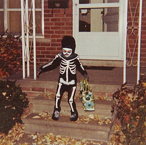

Trick or Treat
Trick-or-treating is a traditional Halloween custom for children and adults in some countries. Children in costumes travel from house to house, asking for treats with the phrase "Trick or treat". The "treat" is usually some form of candy, although in some cultures money is given instead. The "trick" refers to a threat, usually idle, to perform mischief on the homeowner(s) or their property if no treat is given. Trick-or-treating usually occurs on the evening of October 31. Some homeowners signal that they are willing to hand out treats by putting up Halloween decorations outside their doors; others simply leave treats available on their porches for the children to take freely. Houses may also leave their porch light on as a universal indicator that they have candy.
In Scotland and other parts of Britain and Ireland, the tradition of going house to house collecting food at Halloween goes back at least as far as the 16th century, as does the tradition of people wearing costumes at Halloween. There are many accounts from 19th-century Scotland and Ireland of people going house to house in costume at Halloween, reciting verses in exchange for food, and sometimes warning of misfortune if they were not welcomed. In North America, trick-or-treating has been a Halloween tradition since the 1920s. The earliest known occurrence there of the Scottish Halloween custom of guising children going from house to house for food or money while disguised in costume is from 1911, when children were recorded as having done this in Ontario, Canada. While going house to house in costume has long been popular among the Scots and Irish, it is only recently that saying "Trick or treat" has become common in Scotland and Ireland. The activity is prevalent in the United States, Canada, the United Kingdom, the Republic of Ireland, Australia, Puerto Rico, and northwestern and central Mexico. In the last, this practice is called calaverita (Spanish diminutive for calavera, "skull" in English), and instead of "Trick or treat", the children ask, "¿Me da mi calaverita?" ("Can you give me my little skull?"), where a calaverita is a small skull made of sugar or chocolate.

Trick-or-treating typically begins at dusk which can vary according to region on October 31st. It can range between 5:30PM–9:00PM. Some municipalities specify times that can be found on city/town sites. Some municipalities choose other dates. Homeowners wishing to participate sometimes decorate their homes with artificial spider webs, plastic skeletons and jack-o-lanterns. While not every residence may be decorated for the holiday, those participating in the handing out of candy will opt to leave a porch light on to signify that the opportunity for candy is available. Some homeowners may go as far as asking trick-or-treaters for a "trick" before providing them with candy, while others simply leave the candy in bowls on the porch. In more recent years, October 2018 participation has spread through whole neighborhoods, with children even visiting senior residences and condominiums.